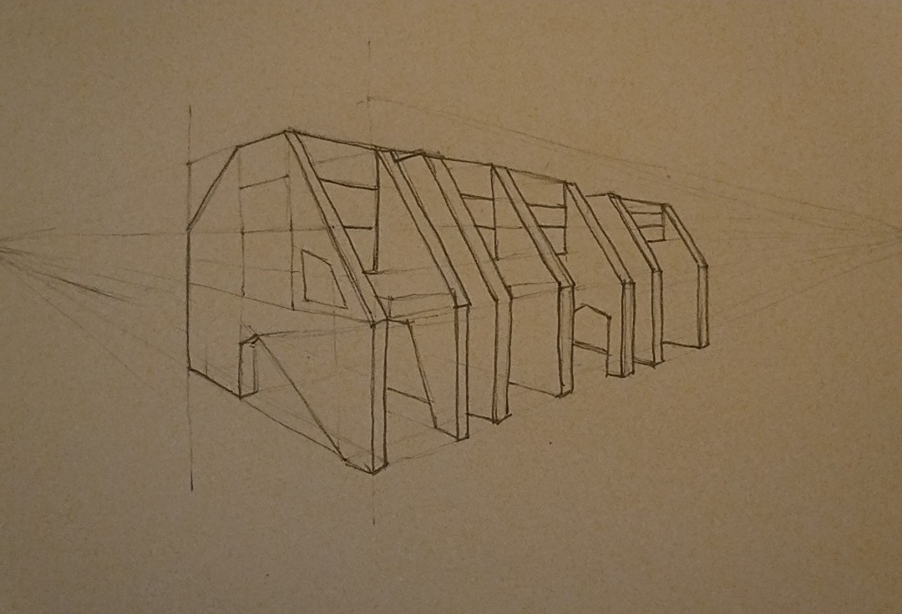

17 Feb 2025
A few days ago, I went to Bhopal for some work. On the second day of the trip, I woke up and had a rather unexpected burst of inspiration to draw- I had been looking at open-source architecture the previous night - Wikihouse1, the OpenStructures community2, and more.3 Looking at them gave me an inspiration to draw a building. I had an idea in my mind, I knew what I wanted to draw. Except... It had been almost six, seven years since I drew something. Pen on paper, at least. I had been drawing digitally for about a year, but neither were my drawings about architecture nor was drawing digitally the same as drawing on paper.
I wasn't sure if it would turn out good- I took out a small book and a pencil, and started sketching. In about ten, or fifteen minutes, I had, in front of me, a sketch of a building.
This is the sketch, in case you were wondering:
As I looked at the sketch, I realised that it was a reflection of the architecture I had seen living in Gujarat for the past seven months. Gigantic slabs of concrete, with bricks in between- perhaps that is an understatement of the types of architecture the ate has to offer, but again, this was what I had perceived. The sketch was finished. It was done.